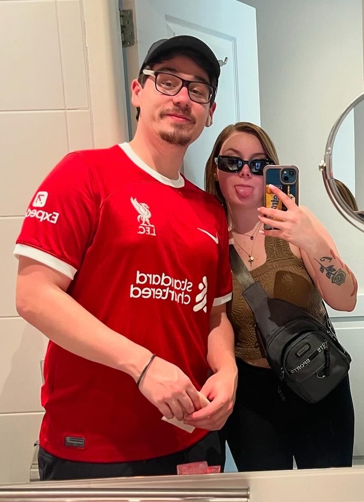

About Me

Hey there! I'm a 26 year old IT Specialist and tech enthusiast from New York with a strong interest in cybersecurity and software development. I'm passionate about finding creative solutions to complex problems and am always on the lookout for new challenges to grow my skills. When I'm not working on cybersecurity or code, you can usually find me watching sports, playing some video games, riffing on my guitar or hanging out with my amazing girlfriend. I love to get out and travel as much as I can. I have visited 35+ countries and counting! You can reach me over on my socials.